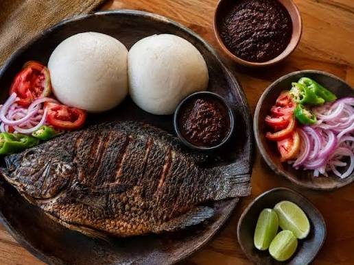

West Africa, Ghana
Banku and Tilapia
A Ghanaian favorite from the Ga and Ewe traditions: smooth, slightly sour balls of fermented corn and cassava dough, served with whole grilled tilapia and a fiery fresh pepper sauce. Popular at roadside chop bars and family tables alike.
Time 1 hr 15
Serves 4

Ingredients
- Fermented corn dough 500 g
- Cassava dough 250 g
- Whole tilapia, cleaned 4
- Ginger, garlic, onion (marinade) 2 tbsp each
- Tomatoes (pepper sauce) 3
- Scotch bonnet peppers 2
- Onion, salt, oil to taste
Method
1. Marinate and grill the tilapia
Score the fish, rub it with blended ginger, garlic, onion and salt, then grill until the skin is crisp.
2. Mix the doughs
Mix the corn and cassava doughs with water and a pinch of salt until smooth, with no lumps.
3. Cook and turn the banku
Cook over medium heat, stirring hard with a wooden spatula, for 20–25 minutes until thick, smooth and stretchy. Shape into balls.
4. Grind the pepper sauce
Grind the tomatoes, peppers and onion with salt in an asanka (clay bowl). Serve with the banku and fish.
Watch it made
Nutrition per serving, about 450 g.
| Nutrient | Amount |
|---|---|
| Calories | about 620 kcal |
| Protein | 40 g |
| Carbohydrates | 75 g |
| Fat | 16 g |